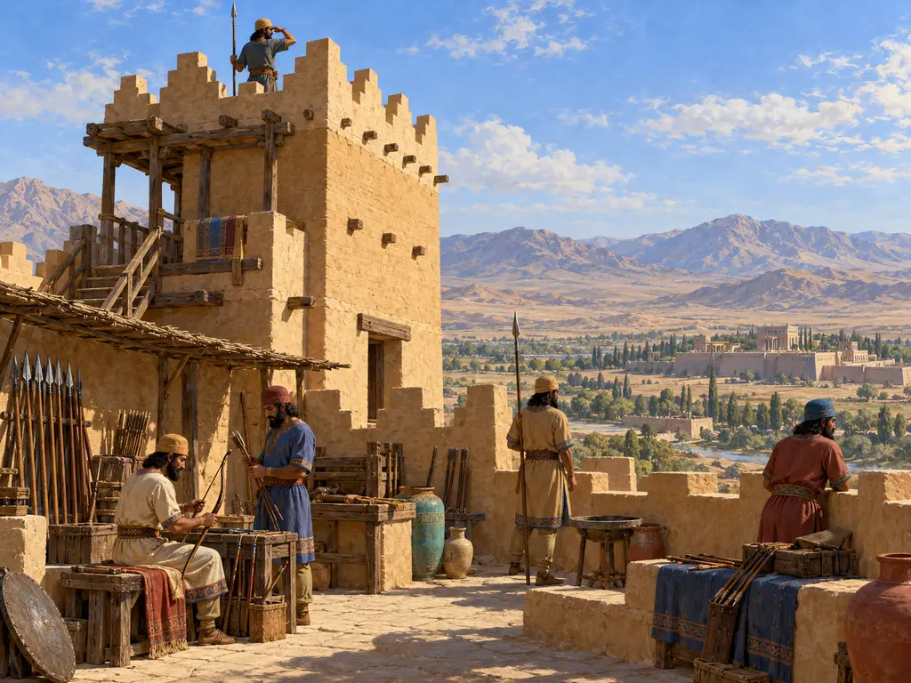
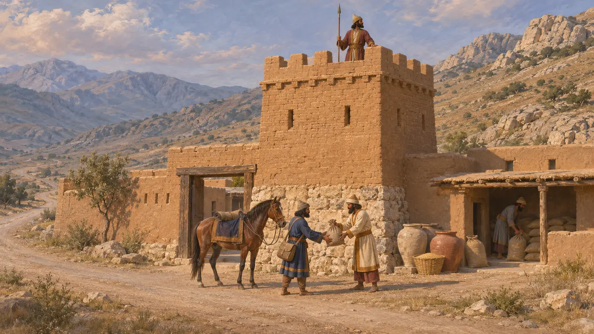
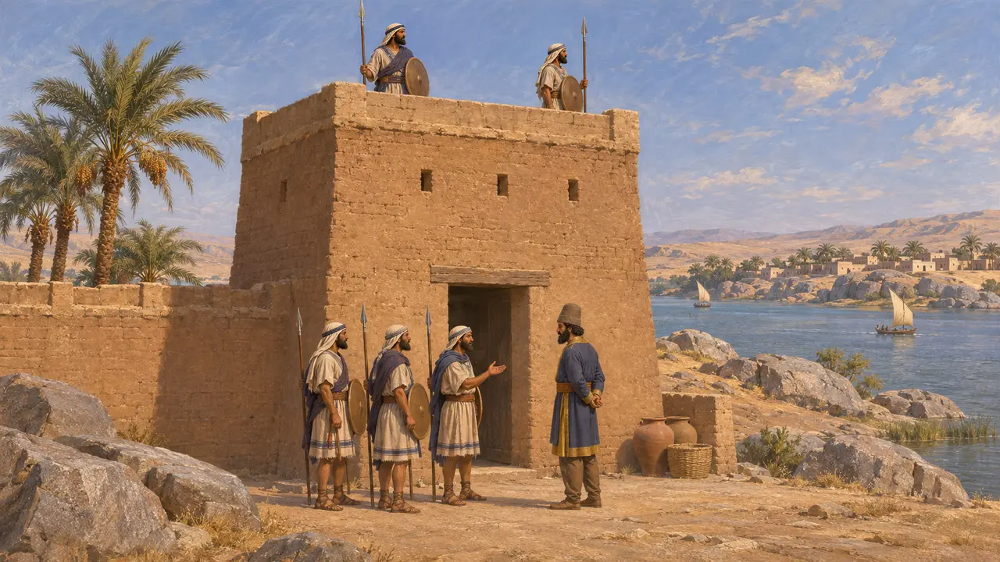
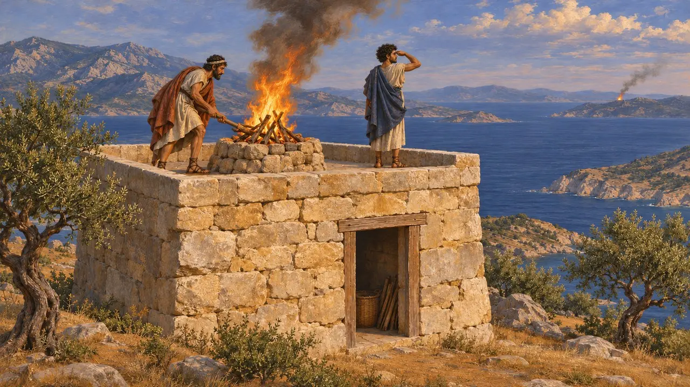
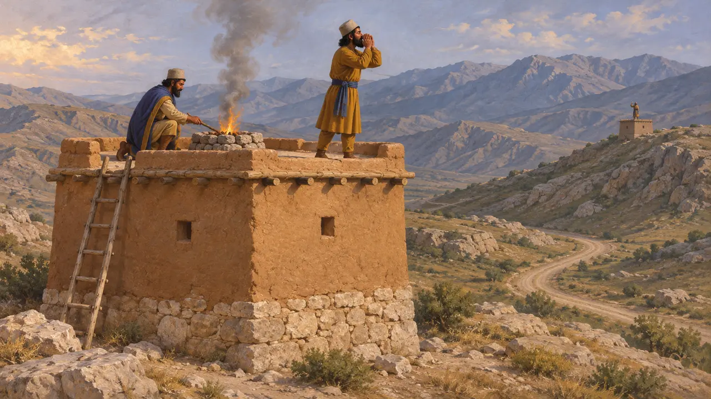
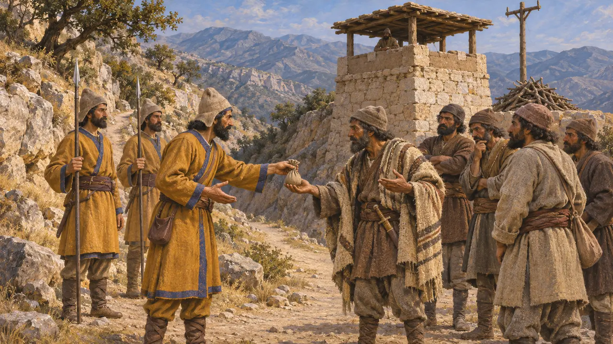

Torre di guardia
Posto di vedetta e di segnalazione lungo strade e frontiere, impero persiano, VI-V secolo a.C.
Forti, guarnigioni e posti di vedetta sorvegliavano le strade, i guadi e le frontiere dell'impero persiano. I loro uomini vigilavano contro i pericoli, e gli autori greci descrivono allarmi trasmessi col fuoco o gridando da un'altura all'altra. Poche torri isolate di quest'epoca sono state scavate, ma i documenti e gli autori greci mostrano che posti presidiati e segnali facevano parte del modo in cui il Re teneva le sue terre.
Nel gioco: Due guardie bersagliano i predoni entro otto caselle e accendono un segnale di fuoco quando i predoni si radunano; richiede una strada e gli scalpellini la riparano. Le vere vedette stavano probabilmente in forti presidiati, e talvolta i re pagavano invece i popoli delle colline.

Luoghi fortificati nelle tavolette di Persepoli
Nelle fontiLe tavolette elamite dell'archivio delle Fortificazioni di Persepoli, scritte tra il 509 e il 493 circa, menzionano luoghi fortificati in Perside e in Elam. La parola elamita halmarriš è di solito tradotta come fortezza o insediamento fortificato. Lo stesso archivio registra le razioni distribuite a viaggiatori, guide e corrieri espressi lungo le strade, a testimonianza di una rete viaria rifornita e sorvegliata dall'amministrazione.
R. Hallock, Persepolis Fortification Tablets, 1969; W. Henkelman, The Other Gods Who Are, 2008

La guarnigione di Elefantina
Nelle fontiI papiri aramaici di Elefantina, al confine meridionale dell'Egitto, descrivono una guarnigione di soldati giudei nella fortezza di Yeb, con gli Aramei stanziati soprattutto nella vicina Siene. I soldati erano organizzati in reparti sotto comandanti con nomi iranici, babilonesi e di altra origine. I papiri risalgono per lo più alla seconda metà del V secolo, dopo il periodo del gioco, ma mostrano come l'impero mantenesse soldati in modo permanente nei punti di frontiera.
B. Porten, Archives from Elephantine, 1968

Segnali di fuoco in Erodoto
Racconto anticoErodoto racconta che nel 479 Mardonio sperava di far sapere a Serse, a Sardi, di aver preso Atene una seconda volta, con segnali di fuoco trasmessi di isola in isola. Riferisce anche che nel 480, quando le navi persiane catturarono le navi di guardia greche al largo di Sciato, la notizia raggiunse la flotta greca all'Artemisio tramite segnali di fuoco dall'isola. Entrambi i racconti mostrano che le catene di fuochi erano un mezzo consueto per dare rapidamente l'allarme.
Herodotus 9.3; Herodotus 7.183

Esisteva una rete imperiale di segnali luminosi?
ContesoDiodoro descrive le vedette che nel 317, in Perside, sotto il governatore macedone Peucesta, si gridavano messaggi da un'altura all'altra, così che le notizie coprivano in un giorno un mese di cammino. Il trattato Sul cosmo, erroneamente attribuito ad Aristotele, afferma che i fuochi di segnalazione portavano al Re notizie da tutte le sue terre in un solo giorno. Molti storici ritengono queste testimonianze tarde ed esagerate, e pensano che le catene di segnalazione fossero locali o allestite per le campagne militari, anziché costituire un'unica rete permanente.
Diodorus 19.17; [Aristotle], On the World; P. Briant, From Cyrus to Alexander, 2002

Popoli delle colline sulle strade della Perside
Racconto anticoArriano dice che gli Ussi, un popolo montano stanziato tra Susa e la Perside, pretesero da Alessandro nel 331 un compenso per il passaggio attraverso le loro montagne, così come lo avevano ottenuto dal re persiano. Alessandro li costrinse a sottomettersi. Il suo racconto suggerisce che mantenere aperte le strade della madrepatria potesse significare trattare con i popoli delle colline, oltre che sorvegliarli.
Arrian, Anabasis 3.17
Fonti
- Herodotus, Histories
- R. Hallock, Persepolis Fortification Tablets, 1969
- P. Briant, From Cyrus to Alexander, 2002
- B. Porten, Archives from Elephantine, 1968
- Diodorus 19.17
- Arrian, Anabasis 3.17